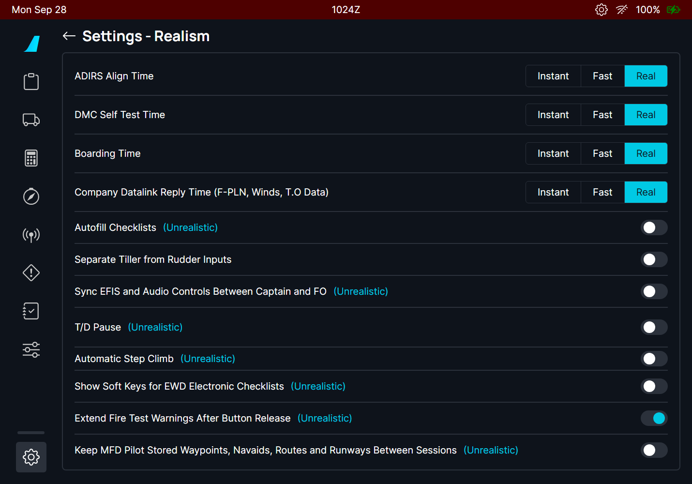

The A380X ECAM gets the FCOM procedures and their STATUS, a working EMER CANC pushbutton and MORE key, and both aircraft can keep the FIRE TEST running a few seconds after the button is released
AircraftA380X (ECAM, FWS) and A32NX + A380X (FIRE TEST option)Where to find itA380X ECP (ABN PROC, EMER CANC, RCL, MORE, STS); EWD and SD STATUS page; overhead FIRE TEST; flyPad > Settings > RealismBranchcore/ecam-fws, based on master (FlyByWire master 255546cb0 merged in); independent.StatusEMER CANC tested in the sim by the user: OK (2026-09-29 and 2026-10-02). ABN PROC STATUS tested by the user: OK (2026-10-02, CKPT WINDOW CRACKED and FUEL LEAK). FIRE TEST option tested by the user: A32NX OK (2026-09-17), A380X OK (2026-09-29). ECAM procedures: tested in the sim (September 2026). ECP MORE key and light: not sim-tested (13 unit tests).PicturesEWD pictures (ECAM procedures) and the flyPad Realism page (FIRE TEST) from the local browser harness, running the build installed in the sim. No pictures for EMER CANC, the STATUS lines and the MORE key: the flight warning system does not run in the harness.
1. A380X ECAM procedures from the FCOM
2. A380X STATUS of the ABN PROC procedures
3. A380X EMER CANC pushbutton
4. A380X ECP MORE key and light on the STATUS page
5. FIRE TEST extended after the button release
1. A380X ECAM procedures from the FCOM
Aircraft: A380X | Where: ECP ABN PROC; EWD | Status: Tested in the sim (September 2026). CKPT WINDOW CRACKED and FUEL LEAK were also run by the user with their STATUS on 2026-10-02.
What it is for
Many ABN PROC procedures were marked WIP: they had no lines and no FWS entry, so selecting one showed nothing. They now carry the FCOM text (PRO-ABN-ECAM-10 and -20). Some sensed alerts also got their FCOM lines, with the lines the FWS can check ticking by themselves.
Opening a not-sensed procedure
Press ABN PROC on the ECP. The EWD lists the red emergency procedures, then the categories (ENG, F/CTL, L/G, NAV, FUEL, MISCELLANEOUS).
Move the cursor with the ECP UP / DOWN keys and press CHECK: the category opens, then the procedure.
The procedure shows in grey with ACTIVATE: a preview. CHECK on ACTIVATE runs it: the lines turn cyan and the cursor walks through them.
Figure 1. ABN PROC > MISCELLANEOUS.Figure 2. ABN PROC > L/G: the landing gear procedures.
Figure 3. DITCHING before ACTIVATE (grey preview).Figure 4. DITCHING activated: ATC and CABIN & CKPT checked by the crew; the cursor on JETTISON ARM.
FUEL LEAK (the FUEL LEAK DETECTED procedure, with LAND ANSA), MAN BALANCING PROCEDURE
L/G
LDG WITH ABNORM NOSE L/G, WITH 2 ABNORM L/Gs ON SAME SIDE, WITH 1 ABNORM WING OR BODY L/G, WITH 2 ABNORM BODY L/Gs, WITH 2 ABNORM WING L/Gs (they call the WHEEL page)
NAV
IR ALIGNMENT IN ATT MODE
ENG
HI VIBRATIONS (was missing from the list)
Figure 5. LDG WITH ABNORM NOSE L/G (preview).Figure 6. IR ALIGNMENT IN ATT MODE (preview).
Sensed alerts with FCOM lines
These appear by themselves when the failure is detected.
Figure 7. ENG 1 FAIL in flight: AUTO RELIGHT IN PROGRESS, THR LEVER 1 IDLE (ticked, the lever is at idle), then the relight / damaged branches.Figure 8. ENG 1 FAIL on the ground: the ground lines only.
Situation
What you should see
ENG x FAIL just after lift-off
The first line is L/G ... UP, until the gear lever is up.
ENG x FAIL in flight
AUTO RELIGHT IN PROGRESS; THR LEVER x IDLE, ENG x MASTER OFF, FIRE P/B, APU BLEED, AGENT: these tick from the cockpit controls.
ENG x FAIL on the ground
Only the ground part of the procedure.
All four engines fail in flight
ALL ENGINES FAILURE (red, LAND ASAP): the FCOM ALL ENG FLAME OUT procedure, fuel remaining / no fuel, relight, then forced landing or ditching; it scrolls with the cursor.
COND HOT AIR 1 (2) FAULT (hot air valve fault)
CARGO TEMP MONITOR; HOT AIR 1 (2) ON shows only while the HOT AIR pushbutton is OFF.
COND TEMP CTL FAULT
Now with its FCOM lines.
Figure 9. ALL ENGINES FAILURE, first page.Figure 10. COND HOT AIR 1 FAULT.
Reading the lines
Upper case .IF ... lines are ECAM conditions: the crew confirms them (CONFIRM ...), then the lines below become active.
Headers such as AT TOP OF DESCENT : are centred sub-headings.
Sensed lines tick by themselves once the action is done; the others are ticked by the crew with the ECP CHECK key.
A line fits the 41 characters of the EWD; nesting is capped at three levels.
Limitations and why
Limitation
Why
What to do
About 85 sensed alerts show their title only.
The FCOM gives no lines for them ("Crew awareness").
-
Limitations, INOP SYS, INFO and deferred procedures of the new procedures.
They are on the STATUS page: see the feature A380X STATUS of the ABN PROC procedures below.
-
FLUCTUATING VERTICAL SPEED stays WIP; HOT AIR 1(2) OFF / VLV OPEN, T.O V1/VR/V2 DISAGREE, OVERSPEED LOAD ANALYSIS REQUIRED have no lines.
They are not in the 2011 FCOM used as the source.
-
ALL ENGINES FAILURE is long.
It is the full FCOM procedure; the EWD scrolls with the cursor.
-
How to use
For a failure the ECAM does not detect: press ABN PROC on the ECP.
Choose the category, then the procedure, with the ECP UP / DOWN keys and CHECK.
Read the grey preview; put the cursor on ACTIVATE and press CHECK to run it.
Tick each line with CHECK once it is done; the sensed lines tick by themselves.
Sensed alerts (ENG FAIL, COND...) show by themselves: read and do their lines the same way.
How to test
#
Do this
Expected result
1
A380X on the ground, powered. Press ABN PROC on the ECP.
The EWD lists DITCHING and FORCED LANDING in red at the top, then the ENG, F/CTL, FUEL, L/G, NAV and MISCELLANEOUS categories.
2
Open MISCELLANEOUS, then DITCHING.
The procedure in grey with ACTIVATE at the bottom (preview).
3
Put the cursor on ACTIVATE and press CHECK.
The lines turn cyan; the cursor is on the first line (ATC ... NOTIFY & SQUAWK 7700).
4
Press CHECK on each line in turn.
Each line is ticked and the cursor moves to the next one.
5
ABN PROC > ENG.
HI VIBRATIONS is in the list.
6
ABN PROC > L/G > LDG WITH ABNORM NOSE L/G, then ACTIVATE.
The procedure runs; the SD shows the WHEEL page.
7
ABN PROC > NAV > IR ALIGNMENT IN ATT MODE; ABN PROC > FUEL > FUEL LEAK and MAN BALANCING PROCEDURE; MISCELLANEOUS > CKPT WINDOW CRACKED, CKPT WINDOW ELEC ARCING, OIS FAULT.
Each one opens with its FCOM lines (none is empty any more).
8
In flight, make engine 1 run down with its ENG MASTER ON and its FIRE pushbutton in (no flyPad engine failure on this branch: use the sim engine failure or a SimConnect tool).
ENG 1 FAIL with AUTO RELIGHT IN PROGRESS; THR LEVER 1 IDLE ticks by itself when the lever is at idle.
9
Same on the ground.
ENG 1 FAIL with the ground lines only.
2. A380X STATUS of the ABN PROC procedures
Aircraft: A380X | Where: SD STATUS page; PFD limitations | Status: Tested in the sim by the user: OK (2026-10-02) with CKPT WINDOW CRACKED (both layers) and FUEL LEAK. The L/G, ELEC ARCING and MAN BALANCING lines: no record of a sim test.
What it is for
The not-sensed procedures of the feature above had no STATUS: after them, the STATUS page stayed NORMAL. The FCOM gives each one its limitations, inoperative systems, information and deferred procedure (A380 FCOM PRO-ABN-ECAM-10-28, -32 and -80). The FWS now writes them from the lines the crew ticks: the STATUS follows the branch of the procedure that was flown.
What you see
Procedure
Line ticked
STATUS
L/G LDG WITH ABNORM ... (the five)
LDG LIMITED TO MAX LDG WEIGHT
LIMITATIONS (approach and landing): MAX LDG WEIGHT, LDG DIST AFFECTED; MAX LDG WEIGHT on the PFD. INOP SYS (approach and landing): BTV, always.
MISC CKPT WINDOW CRACKED
EXTERNAL LAYER CRACKED
No limitation. Deferred procedure AT TOP OF DESCENT: CKPT WINDOW CRACKED.
INTERNAL LAYER CRACKED (or no diagnosis)
MAX FL : 230/MEA (STATUS and PFD); INFO: the cabin altitude table (ACFT FL / CABIN ALT TRGT: 100 = LDG ELEVN, 150 = 3000, 200 = 6000, 230 = 8000); deferred procedure at top of descent: CABIN ALT MODE AUTO.
AICU 1 PULL / AICU 2 PULL
INOP SYS: L (R) WINDSHIELD HEATG, SLIDG WINDOW HEATG, FIXED WINDOW HEATG; with both AICU pulled, WING A-ICE too.
MISC CKPT WINDOW ELEC ARCING
AICU 1 PULL / AICU 2 PULL
The same window heating INOP SYS.
FUEL LEAK
-
LAND ANSA (STATUS and PFD), and FUEL PARTLY UNUSABLE unless LEAK STOPS is ticked.
LEAK CONTINUES
INFO: MIN FUEL USABLE : OTHER FEED TKs, (ALL OTHER FUEL MAYBE LOST).
FUEL MAN BALANCING PROCEDURE
-
DELAY T.O while on the ground.
FEED TKs 1 & 4 (or 2 & 3) NOT BALANCED
INFO: FUEL CONSUMPT INCRSD : FMS PRED DISREGARD.
Limitations and why
Limitation
Why
What to do
A deferred procedure that depends on a crew choice carries that choice as its first line (for example INTERNAL LAYER CRACKED OR NO DIAGNOSIS).
The FWS creates the deferred procedures when the abnormal procedure is first shown, before the crew has ticked anything.
Read the condition line before doing the deferred line.
How to use
Run the ABN PROC procedure and tick the lines that match your case (for example INTERNAL LAYER CRACKED).
Press STS on the ECP (or wait for the STATUS page at the end of the procedures).
Read the LIMITATIONS, INOP SYS and INFO; the deferred procedure comes up at top of descent.
How to test
#
Do this
Expected result
1
A380X in flight (or on the ground). ABN PROC > MISCELLANEOUS > CKPT WINDOW CRACKED, ACTIVATE. Tick EXTERNAL LAYER CRACKED and its lines.
STATUS page: no limitation; the deferred procedure AT TOP OF DESCENT CKPT WINDOW CRACKED is listed.
2
Run it again (or reload) and tick INTERNAL LAYER CRACKED instead, then AICU 1 PULL.
STATUS: MAX FL : 230/MEA (also on the PFD), the cabin altitude table in INFO, INOP SYS L WINDSHIELD HEATG, L SLIDG WINDOW HEATG, L FIXED WINDOW HEATG.
3
Also tick AICU 2 PULL.
INOP SYS adds the R window heating lines and WING A-ICE.
4
ABN PROC > FUEL > FUEL LEAK, ACTIVATE.
STATUS: LAND ANSA (also on the PFD) and FUEL PARTLY UNUSABLE.
5
Tick LEAK STOPS.
FUEL PARTLY UNUSABLE goes; LAND ANSA stays.
6
On the ground: ABN PROC > FUEL > MAN BALANCING PROCEDURE, ACTIVATE.
STATUS: DELAY T.O.
7
ABN PROC > L/G > LDG WITH ABNORM NOSE L/G, ACTIVATE, tick LDG LIMITED TO MAX LDG WEIGHT.
STATUS (approach and landing part): MAX LDG WEIGHT, LDG DIST AFFECTED, INOP SYS BTV; MAX LDG WEIGHT on the PFD.
3. A380X EMER CANC pushbutton
Aircraft: A380X | Where: ECP, right of RCL | Status: Tested in the sim by the user: OK (2026-09-29; again 2026-10-02: caution cancelled for the flight, RCL > 3 s recall, warning aural and MASTER WARN silenced).
What it is for
EMER CANC stops an alert that is wrong or no longer useful: a spurious warning whose aural alert would sound for the rest of the approach, or a caution the crew has dealt with and does not want to see again. Until now the pushbutton did nothing on the FBW A380.
What it does
It acts on the alert at the top of the EWD (A380 FCOM DSC-31-40-20):
Top alert
EMER CANC
A warning (red)
Its aural alert and the MASTER WARN light stop. The procedure stays on the EWD. If the warning goes away and comes back, the aural alert and MASTER WARN come back.
A caution (amber)
The caution, its procedure and the MASTER CAUT light go away for the rest of the flight, even if the failure comes back. It is listed in white under CANCELLED CAUTION on the STATUS page (MORE).
In every case
All the aural alerts stop (the one sounding and those waiting), and the procedures you called from ABN PROC are removed.
Nothing to cancel
The memo EMERGENCY CANCEL ON shows for 3 seconds.
Getting the cancelled cautions back
Press and hold RCL for more than 3 seconds.
The cancelled cautions that are still active come back on the EWD with their procedures.
The cancelled cautions are also forgotten when the warning system loses power, or 50 minutes after the engines are shut down, as the other ECAM memories.
What to expect
A cancelled caution never sounds again in the flight, even if the failure comes back: check the STATUS page.
A silenced warning comes back only if it goes away and triggers again.
EMERGENCY CANCEL ON lasts 3 seconds: the FCOM gives no time; 3 s as the RCL "NORMAL" message.
How to use
Lift the guard and press EMER CANC on the ECP: it acts on the alert at the top of the EWD.
A warning: its aural and MASTER WARN stop, the procedure stays. A caution: it goes away for the rest of the flight.
Check the cancelled cautions on the STATUS page (MORE, CANCELLED CAUTION).
To get them back, press and hold RCL more than 3 seconds.
How to test
#
Do this
Expected result
1
A380X on the ground, engine 1 running. Set the ENG 1 BLEED pushbutton (overhead AIR panel) OFF.
Caution AIR ENG 1 BLEED OFF in amber, MASTER CAUT on, single chime.
2
Press EMER CANC.
The caution and MASTER CAUT go away.
3
Set ENG 1 BLEED back to AUTO, then OFF again.
The caution does not come back (cancelled for the flight).
4
Press STS on the ECP.
The STATUS page shows MORE at the bottom; the MORE page lists AIR ENG 1 BLEED OFF in white under CANCELLED CAUTION.
5
Press and hold RCL more than 3 seconds (ENG 1 BLEED still OFF).
AIR ENG 1 BLEED OFF comes back on the EWD.
6
Press EMER CANC with no alert on the EWD.
The memo EMERGENCY CANCEL ON for 3 seconds.
7
On the runway, parking brake ON, thrust levers to FLX or TOGA (then back to idle).
Warning CONFIG PARK BRK ON in red, MASTER WARN, continuous repetitive chime.
8
Press EMER CANC.
The chime and MASTER WARN stop; CONFIG PARK BRK ON stays on the EWD.
9
Release the parking brake, set it again and advance the thrust levers again.
The warning triggers again with its chime and MASTER WARN.
4. A380X ECP MORE key and light on the STATUS page
Aircraft: A380X | Where: ECP MORE key; SD STATUS page | Status: Not sim-tested (13 unit tests).
What it is for
A380 FCOM DSC-31-40-10 (STATUS MORE PAGE): the crew displays the STATUS MORE page "if MORE appears at the bottom of the STATUS page, by pressing MORE pb on the ECP"; pressing the pb again clears it (DSC-31-40-20). In FBW the ECP MORE key did nothing: the SD paused and resumed its STATUS page in an order that lost the value telling the FWS that MORE was available, and the MORE pb light read a variable nobody wrote. The STATUS MORE page holds the INOP SYS REDUND items and the CANCELLED CAUTION list (see EMER CANC above).
What you should see
Situation
What you should see
STATUS page with REDUND LOSS items or a cancelled caution
MORE in a box at the bottom of the page.
MORE key pressed
The STATUS MORE page (INOP SYS REDUND, CANCELLED CAUTION); the light of the MORE key comes on.
MORE key pressed again
Back to the STATUS page; the light goes off.
Another SD page selected, or the STATUS page has nothing MORE any more
The MORE page and the light go away.
STATUS page without MORE, or another SD page
The MORE key does nothing (only STATUS has a MORE page in FBW).
Limitations and why
Limitation
Why
What to do
Only the STATUS page has a MORE page.
The other SD MORE pages are not built in FBW.
-
A full MSFS restart is needed after an update for the light.
The MORE key light is in the cockpit behaviour file (ecam-cp.xml).
Restart the sim after installing.
How to use
Press STS on the ECP.
If MORE shows at the bottom of the STATUS page, press MORE to see the STATUS MORE page.
Press MORE again (or another page key) to leave it.
How to test
#
Do this
Expected result
1
A380X on the ground, engine 1 running. Make a cancelled caution: ENG 1 BLEED pushbutton OFF, then EMER CANC.
The caution AIR ENG 1 BLEED OFF goes away.
2
Press STS.
STATUS page with MORE boxed at the bottom.
3
Press MORE on the ECP.
The STATUS MORE page with CANCELLED CAUTION: AIR ENG 1 BLEED OFF. The MORE key light is on.
4
Press MORE again.
Back to the STATUS page; the light is off.
5
Press MORE, then a page key (for example ENG).
The ENG page; the MORE light goes off. Back on STATUS, the normal page (not MORE) shows.
6
On a STATUS page without MORE (no REDUND LOSS item, no cancelled caution), press MORE.
Nothing happens; no light.
5. FIRE TEST extended after the button release
Aircraft: A32NX and A380X | Where: flyPad > Settings > Realism; overhead FIRE TEST | Status: Tested in the sim by the user: A32NX OK (2026-09-17, incl. the AGENT / SQUIB DISCH lights), A380X OK (2026-09-29).
What it is for
On the aircraft, the FIRE TEST lasts as long as the button is held. In the simulator, holding the button with the mouse while looking at the ECAM, the master warning and every FIRE and AGENT light is awkward. This option keeps the test running for 7 seconds after you release the button. It is marked unrealistic and is on by default.

Figure 11. Settings > Realism on the A380X: "Extend Fire Test Warnings After Button Release".
What it does
Aircraft
Test
Kept 7 s after the release
A32NX
APU, ENG 1 and ENG 2 FIRE TEST pushbuttons
master warning and CRC, ECAM, FIRE pushbutton lights, AGENT / SQUIB DISCH lights, together
A380X
FIRE TEST pushbutton (overhead)
the fire detection test itself: FIRE lights, squib lights and the FWS warnings, together
Option off: the test stops the instant you release the button, as on the aircraft.
What to expect
The test starts half a second after you press (A380X), as before.
Pressing again during the 7 seconds starts a new 7 seconds after the next release.
The A380X systems host and fire protection system changed: a full MSFS restart after an update.
How to use
flyPad > Settings > Realism: set "Extend Fire Test Warnings After Button Release" ON (the default) or OFF.
Press and release the FIRE TEST pushbutton: with the option ON, check the warnings and lights during the 7 seconds that follow.
How to test
#
Do this
Expected result
1
A32NX, powered, option ON. Press and release the ENG 1 FIRE TEST pushbutton (overhead FIRE panel).
For 7 seconds: ENG 1 FIRE test warning on the E/WD, MASTER WARN, continuous repetitive chime, ENG 1 FIRE pushbutton light and the AGENT 1 / AGENT 2 SQUIB DISCH lights. Then everything goes off together.
2
Same with the APU FIRE TEST and the ENG 2 FIRE TEST.
Same 7 seconds, with their own warning and lights (one AGENT for the APU).
3
Press again during the 7 seconds and release.
A new 7 seconds starts at the new release.
4
Set the option OFF and repeat.
Everything stops at the instant the button is released.
5
A380X, powered, option ON. Press and release the overhead FIRE TEST pushbutton.
The test starts half a second after the press; the FIRE and squib lights and the FWS fire test warnings stay together 7 seconds after the release.